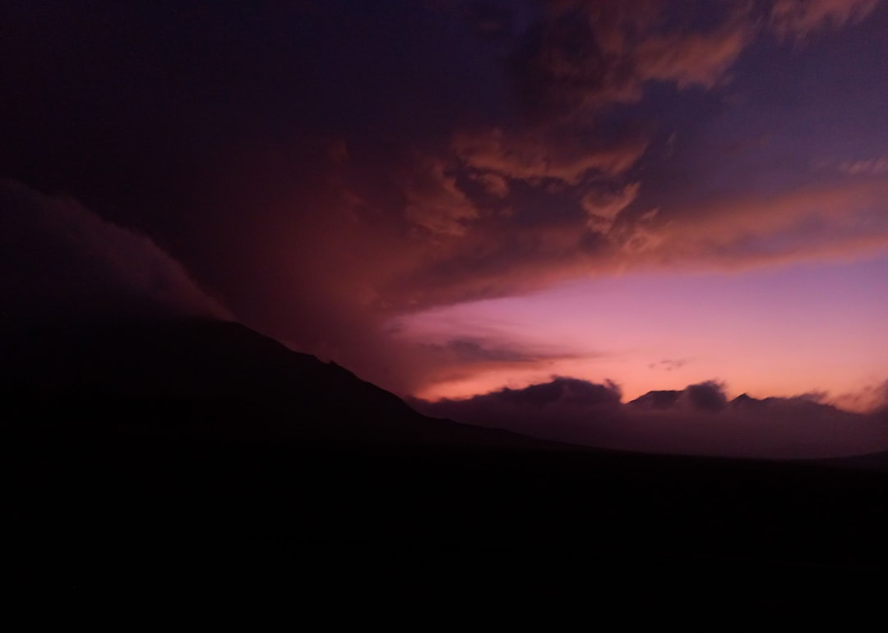
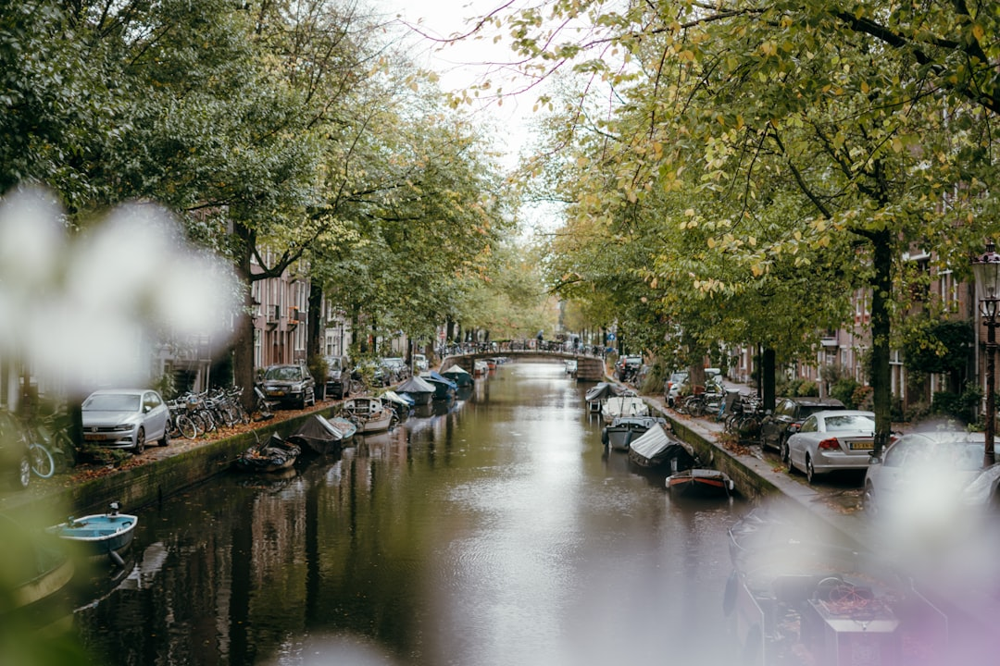

Мой учебный сайт
Этот сайт разработан в рамках учебного курса по веб-разработке и предназначен для размещения лабораторных работ и курсового проекта. Основной целью создания данного сайта является изучение принципов современной адаптивной вёрстки, структуры HTML-документов и каскадных таблиц стилей CSS.
При разработке сайта использовались только базовые веб-технологии: HTML, CSS и JavaScript, без применения сторонних библиотек и фреймворков. Такой подход позволяет лучше понять работу браузера, принципы построения интерфейса и взаимодействие элементов страницы между собой. Сайт имеет логическую и физическую структуру, включающую шапку страницы, навигационное меню, основную область контента и подвал.
Особое внимание было уделено адаптивности сайта. Страница корректно отображается в различных браузерах, включая стандартный браузер Windows Microsoft Edge, а также в Google Chrome и Mozilla Firefox. Использование стандартных HTML-тегов и универсальных CSS-свойств гарантирует стабильную работу сайта на разных устройствах и экранах.
В дальнейшем данный сайт может быть расширен и использован в рамках курса серверного программирования. Например, на его основе можно реализовать систему авторизации пользователей, загрузку и хранение файлов, работу с базой данных и динамическое формирование контента. Таким образом, текущий проект является фундаментом для более сложных веб-приложений.
Примеры фотографий
Городской транспорт
Пример городской фотографии с эффектом движения и ночного освещения.

Закат
Фотография закатного неба, демонстрирующая работу с цветом и светом.
Декоративный объект
Изображение, подчёркивающее детализацию и глубину резкости.
Осенний пейзаж
Пример работы с природными текстурами и мягкими цветами.

Городской канал
Композиция с перспективой и глубиной пространства.